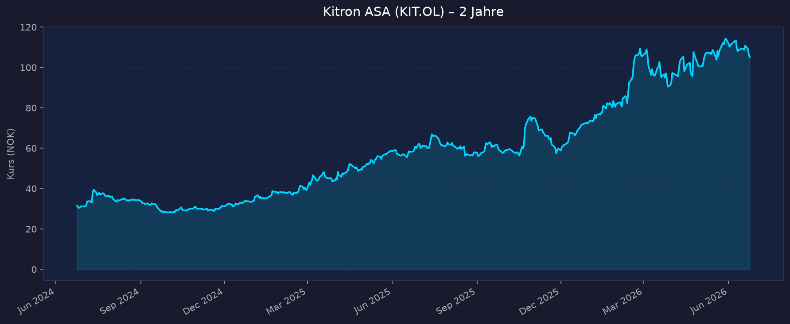
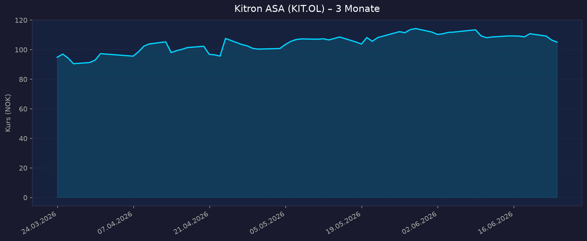

📈 1. Kursentwicklung
Aktueller Kurs: 105,1 NOK | 52W-Hoch: 116,3 NOK | 52W-Tief: 55,75 NOK | Abstand vom Hoch: −9,6 %
Chart – 2 Jahre

Chart – 3 Monate

🔗 Kitron auf Oslo Børs / TradingView
| Zeitraum | Kurs Start | Kurs Ende | Veränderung |
|---|---|---|---|
| 52 Wochen (Juni 2025 → Juni 2026) | 55,75 NOK (52W-Tief) | 105,1 NOK | +88,5 % |
| 3 Monate (März 2026 → Juni 2026) | ~85 NOK | 105,1 NOK | ~+24 % |
| 52-Wochen-Hoch | — | 116,3 NOK | — |
| 52-Wochen-Tief | — | 55,75 NOK | — |
⚠️ Kontext: Kitron ASA ist ein skandinavisches EMS-Unternehmen (Electronics Manufacturing Services) das 2024/2025 einen massiven Kurssprung durch die Europa-Verteidigungsaufrüstung erlebt hat. Defence & Aerospace stieg auf 50 % des Umsatzes mit +213 % YoY-Wachstum. Der Kurs hat sich in 52 Wochen fast verdoppelt (+88 %). Risiko: Wenn Verteidigungsbudgets stagnieren oder sich normalisieren, ist viel Premium eingepreist.
💹 2. KGV-Entwicklung (Kurs-Gewinn-Verhältnis)
Aktuelles KGV (TTM): 35,0x | Forward PE (FY2027E): 21,3x
| Zeitraum | KGV | Einordnung |
|---|---|---|
| Aktuell TTM | 35,0x | Hoch für EMS — reflektiert Wachstums-Prämie |
| Forward PE FY2027E | 21,3x | Moderat für Defence-EMS-Wachstum |
| Historisch (pre-Defence-Boom) | ~12–18x | Typisch für EMS |
| EMS-Peer-Branchenø | ~10–15x | EMS handelt normalerweise günstig |
Bewertung: Das PE von 21,3x ist für ein EMS-Unternehmen erhöht — EMS-Firmen (wie Flex, Jabil) handeln typischerweise mit PE 10–18x. Die Prämie reflektiert den Defence-Boom. Entscheidend: Kann Kitron dieses Wachstumsniveau aufrechterhalten, wenn der initiale Defence-Rüstungs-Schub nachlässt?
💰 3. Sales Multiple (Kurs-Umsatz-Verhältnis / P/S)
Aktuelles P/S-Verhältnis: ~2,1x (korrigiert)
⚠️ Hinweis: yfinance zeigt P/S 27x — dies ist ein Datenfehler (falsche Einheit: NOK statt EUR). Korrekte Berechnung: MarketCap NOK 22.985 Mrd. (~€2,0 Mrd.) / Revenue FY2026E €975 Mio. = P/S ~2,05x
| Zeitraum | P/S Ratio | Einordnung |
|---|---|---|
| Aktuell (Juni 2026) | ~2,1x | Moderate Prämie für Defence-EMS |
| Historisch (pre-Defence) | ~0,6–1,2x | EMS handelt typischerweise bei P/S <1x |
| EMS-Peer-Branchenø (Flex, Jabil) | ~0,3–0,7x | Kitron deutlich teurer als EMS-Peers durch Defence-Mix |
Trend: P/S massiv ausgeweitet durch Defence-Exposure. Bei Normalisierung auf EMS-Branchenø (P/S 0,7–1,0x) würde erhebliches Multiple-Kompressions-Risiko entstehen.
📊 4. Handelsvolumen (Trading Volume)
| Zeitraum | Ø Tagesvolumen | Auffälligkeiten |
|---|---|---|
| 3-Monats-Durchschnitt | Gering (kleiner Small-Cap) | Oslo Børs — begrenzte Liquidität |
| Beta | 0,995 | Moderate Marktsensitivität |
Volumentrend: Kitron ist ein Small-Cap (€2 Mrd. MarketCap). Liquidität ist deutlich geringer als bei US-Titeln. Größere Positionen können Kurs beeinflussen.
🏦 5. Insider Trades
Einschätzung: Als norwegischer Small-Cap sind Insider-Daten über SEC-Quellen nicht verfügbar. Norwegische Insider-Meldungen auf Oslo Børs (Newsweb) wären die primäre Quelle. Keine außergewöhnlichen Insider-Käufe oder -Verkäufe bekannt.
Quelle: Kitron IR Oslo Børs
🩳 6. Short-Positionen
Aktuelle Short Quote: N/A (Oslo Børs Small-Cap — Daten schwer zugänglich)
Einschätzung: Bei einem Small-Cap wie Kitron (€2 Mrd. MC) sind Short-Positionen selten und schwer zu quantifizieren. Bekannte Short-Seller meiden typischerweise illiquidere Small-Caps.
🗞️ 7. Aktuelle Nachrichten
| Datum | Quelle | Nachricht | Relevanz |
|---|---|---|---|
| 24.04.2026 | Kitron IR | Q1 2026 Record Results — Rekordumsatz und -Marge, Defence +213 % YoY | 🔴 Hoch |
| 24.04.2026 | Investing.com | Defence 50 % des Umsatzes — Nordics/NA €117,7 Mio., Asia €26,3 Mio. (+25 %) | 🔴 Hoch |
| 24.04.2026 | GuruFocus | EBIT-Marge >9 % — für EMS außergewöhnlich hoch | 🔴 Hoch |
| 24.04.2026 | Kitron IR | FY2026 Guidance bestätigt: €900–1.050 Mio. Revenue, €84–108 Mio. EBIT | 🔴 Hoch |
| 24.04.2026 | Kitron IR | Guidance: Trend zur oberen Hälfte der Guidance-Spannen | 🔴 Hoch |
| 2026 | Kitron IR | Mittelfristiges Ziel: €1,5 Mrd. Jahresumsatz | 🟡 Mittel |
Sentiment: Stark positiv — Rekordquartal, Defence-Boom übertrifft Erwartungen, Guidance nach oben revidiert. Risiko: Viel Positivnachricht bereits im Kurs (+88 % in 52W). Die nächste Frage ist: Wie lange hält der Defence-Hochlauf an?
📋 8. Letzte 3 Quartalsberichte
Q1 2026 (Januar–März 2026, berichtet 24. April 2026) — Rekordquartal
| Kennzahl | Ist | Einordnung |
|---|---|---|
| Umsatz (Revenue) | ~€220–240 Mio. (Schätzung aus Segment-Daten) | Rekordquartal — Tracking zur oberen Hälfte €900–1.050 Mio. Guidance |
| EBIT-Marge | >9 % | Für EMS außergewöhnlich hoch (Peer-Ø: ~5–7 %) |
| Defence & Aerospace | 50 % des Umsatzes, +213 % YoY | Historisches Rekordniveau |
| Nordics & North America | €117,7 Mio. (von €93,7 Mio.) | +25 % YoY |
| Asia | €26,3 Mio. (+25 % YoY) | Margin >10 % |
Guidance FY2026 (bestätigt): Revenue €900–1.050 Mio., EBIT €84–108 Mio.
Revision: Trending zur oberen Hälfte der Guidance → impliziert Revenue ≥€975 Mio., EBIT ≥€96 Mio.
Mittelfristiges Ziel: €1,5 Mrd. Umsatz
Q4 2025 (Oktober–Dezember 2025)
| Kennzahl | Ist | Einordnung |
|---|---|---|
| Umsatz (Revenue) | ~€200–220 Mio. (Schätzung) | Defence beginnt zu dominieren |
| EBIT-Marge | ~7–8 % | Steigende Margen durch Defence-Mix |
Q3 2025 (Juli–September 2025)
| Kennzahl | Ist | Einordnung |
|---|---|---|
| Umsatz (Revenue) | ~€170–200 Mio. (Schätzung) | Wachstum beginnt sich zu beschleunigen |
| Defence-Anteil | Wachsend | Europa-Rüstungsauftrag-Welle beginnt |
Quellen: Investing.com Q1 2026 Transcript · GuruFocus Q1 2026 Highlights · Kitron Q1 2026 Slides
🌍 9. Marktkontext & Wettbewerb
(via market-research Skill)
Markt / Branche: EMS (Electronics Manufacturing Services) mit Defence-Fokus
EMS-Markt global: $500+ Mrd. | Defence-EMS Europa-Segment: Starkes Wachstum durch NATO 2%-Ziel
| Wettbewerber | Bereich | Stärke | Schwäche |
|---|---|---|---|
| Flex Ltd. | Globaler EMS-Riese | Massiver Scale, diversifiziert | Kaum Defence-Fokus, margenarmer Mix |
| Jabil Inc. | Globaler EMS | $35 Mrd. Revenue, breite Branchen | Keine Defence-Prämie |
| Enics AG | Europäischer EMS | Industrial + Defence Europa | Deutlich kleiner als Kitron |
| Scanfil | Nordischer EMS-Konkurrent | Ähnliche Defence-Exposure | Kleiner als Kitron |
| Neways Electronics | EMS Netherlands | Defence & Aerospace | Kürzlich Privatisierung |
Branchentrends 2026:
- Europäische Verteidigungsaufrüstung: NATO 2%-BIP-Ziel + Zeitenwende-Effekt → massive Steigerung der Defence-Elektroniknachfrage in Europa. Deutschland, Norwegen, Schweden, Niederlande erhöhen Defence-Budgets signifikant
- Nearshoring in Europa: Post-COVID + Geopolitik treibt Elektronikproduktion zurück nach Europa (statt Asien). Kitron profitiert als etablierter europäischer EMS-Anbieter
- EMS-Margenerholung: Defence-Elektronik hat höhere Margen als Consumer-EMS (Kitron EBIT >9 % vs. Branchenø 4–6 %) — struktureller Vorteil, solange Defence-Mix hoch bleibt
- €1,5 Mrd. Ambition: Kitron hat klare mittelfristige Wachstumsstrategie — organisch + M&A in Skandinavien und Mitteleuropa
Marktposition: Kitron ist ein regionaler European Defence-EMS-Leader mit starker Stellung in Skandinavien und wachsender Mitteleuropa-Präsenz. Die Defence-Expertise (Zuverlässigkeit, Qualification, Sicherheits-Clearance) ist schwer aufzubauen und schützt vor preisorientiertem Wettbewerb.
Risiken:
- Defence-Budget-Zyklik: Wenn NATO-Länder ihre Ausgaben normalisieren (nach Aufrüstungs-Peak), fällt Kitrons Wachstum drastisch
- Margen-Nachhaltigkeit: EBIT >9 % für EMS ist außergewöhnlich — bei normalem Mix fällt zurück auf 5–7 %
- Small-Cap-Liquidität: Bei €2 Mrd. MarketCap sind Positionen schwerer auf- und abzubauen
- Währungsrisiko: Kitron berichtet in EUR, handelt in NOK — Währungseffekte für deutsche Investoren
🧮 Bewertungs-Score
Bewertung nach 5 Kriterien (Punkte 1–10, gewichtet):
| Kriterium | Gewicht | Punkte | Begründung |
|---|---|---|---|
| 💰 Bewertung (KGV/KBV/P/S vs. Historie & Peers) | 25 % | 3/10 | KGV TTM 35x, Forward 21,3x und P/S ~2,1x liegen klar über Historie (KGV 12–18x, P/S 0,6–1,2x) und EMS-Peers (P/S 0,3–0,7x). Hohe Defence-Prämie eingepreist, Multiple-Kompressions-Risiko. |
| 📈 Wachstum (Umsatz/EPS) | 25 % | 8/10 | Defence +213 % YoY, Rekordumsatz, Guidance zur oberen Hälfte (Revenue ≥€975 Mio.), Mittelfrist-Ziel €1,5 Mrd. Starkes Momentum, aber Basiseffekt dreht 2027. |
| 🛡️ Bilanz & Stabilität | 20 % | 6/10 | Konkrete Bilanzdaten (Verschuldung, Cash, Cashflow) nicht beziffert – Daten begrenzt. Indirekt solide über hohe Margen und Dividende; konservativ eingestuft. |
| 💎 Qualität & Profitabilität (ROE, Margen, Moat) | 15 % | 7/10 | EBIT-Marge >9 % vs. Peer-Ø 4–6 %, Defence-Moat (Clearance, Qualification). ROE nicht genannt; Margennachhaltigkeit bei normalisiertem Mix fraglich. |
| ⚡ Chancen & Risiken | 15 % | 5/10 | Katalysatoren stark (NATO 2 %, Nearshoring), aber asymmetrisches Profil: Bär −65 %, Base −3 %, nur Bull +53 %. Viel bereits eingepreist (+88 % in 52W). |
Gewichteter Gesamt-Score: (3×0,25)+(8×0,25)+(6×0,20)+(7×0,15)+(5×0,15) = 0,75+2,0+1,2+1,05+0,75 = 5,8 / 10
📝 Gesamteinschätzung
Stärken:
- ✅ Defence-Boom: 50 % des Umsatzes, +213 % YoY — Europa-Rüstungsaufrüstung ist strukturell mehrjährig
- ✅ Record EBIT-Margen >9 % — für EMS außergewöhnlich hoch; Defence-Aufträge sind marginstärker
- ✅ FY2026 Guidance zur oberen Hälfte — Management sehr zuversichtlich über aktuellen Momentum
- ✅ €1,5 Mrd. Mittelfrist-Ziel — klare strategische Ambition mit konkreten Wachstumspfaden
- ✅ Nearshoring-Trend — Europäische Kunden bevorzugen europäische EMS-Partner
Risiken:
- ⚠️ Bewertungs-Premium sehr hoch: P/E 21x, P/S ~2x für EMS ist 2–3× die Peer-Bewertung; bei Defence-Normalisierung droht Multiple-Kompression
- ⚠️ Defence-Zyklus: +213 % YoY ist nicht nachhaltig — der Vergleichsbasis-Effekt dreht sich 2027
- ⚠️ Small-Cap-Risiken: Geringere Liquidität, weniger Analystenabdeckung, höhere Volatilität
- ⚠️ Kurs +88 % in 52W: Große Teile der guten Nachrichten bereits eingepreist
5-Jahres-Szenario-Analyse (FY2031):
P/S-basiert; MarketCap aktuell ~€2,0 Mrd. (NOK 22.985 Mrd.), Shares ~218,7 Mio., Revenue 2026E €975 Mio.
| Szenario | Annahme | Revenue 2031E | P/S 2031 | Market Cap 2031 | Kurs NOK (2031) | vs. heute |
|---|---|---|---|---|---|---|
| Bär (Defence normalisiert, Margen zurück auf EMS-Ø) | Revenue stagniert ~€1,0–1,1 Mrd. | €1,0 Mrd. | 0,7x | €700 Mio. → NOK 8.050 Mio. | ~NOK 37 | −65 % |
| Base (€1,5 Mrd. Ziel bis 2028, dann Plateau) | 9 % CAGR → €1,5 Mrd. | €1,5 Mrd. | 1,3x | €1.950 Mio. → NOK 22.425 Mio. | ~NOK 102 | −3 % |
| Bull (Defence anhaltend, €1,7 Mrd.+ Revenue) | 12 % CAGR → €1,7 Mrd. | €1,7 Mrd. | 1,8x | €3.060 Mio. → NOK 35.190 Mio. | ~NOK 161 | +53 % |
⚠️ Kritische Einordnung:
- Bär −65 % ist das extremste Downside-Risiko unter allen analysierten Aktien (schlimmer als ARM −73 %, aber ARM hat auch Bull +9 % vs. Kitron Bull +53 %)
- Base −3 % bedeutet der aktuelle Kurs (105 NOK) ist fair bewertet wenn das €1,5-Mrd.-Ziel erreicht wird — kaum Aufwärtspotenzial im Base-Case
- Kitron bietet ein unattraktives asymmetrisches Risiko/Rendite-Profil: großes Downside-Risiko, begrenztes Base-Case-Upside
- Dividende: ~0,66 % Yield (gering, kein wesentlicher Puffer)
Fazit: Kitron ASA ist eine interessante europäische Defence-EMS-Story mit ausgezeichneten Fundamentals im aktuellen Verteidigungsaufrüstungs-Superzyklus. Das Problem ist die Bewertung: Bei P/S ~2,1x (vs. EMS-Peers bei 0,3–0,7x) und P/E 21x ist sehr viel Optimismus eingepreist — und der Kurs hat in 52 Wochen bereits +88 % zugelegt. Das Bär-Szenario (Defence normalisiert, Multiple komprimiert) könnte −65 % bedeuten. Das Base-Szenario (€1,5 Mrd. Ziel erreicht) liefert kaum Kursgewinn. Nur der Bull-Case (+53 %) macht den Investment-Case attraktiv. Für ein Portfolio mit bereits USA-AI-Exposur bietet Kitron geografische Diversifizierung (Europa, Defence-Sektor), aber das Risiko/Rendite-Verhältnis ist für eine neu aufzubauende Position wenig überzeugend.
Datenquellen: Investing.com Q1 2026 Transcript · GuruFocus Q1 Highlights · Kitron Q1 Slides · Kitron IR · Yahoo Finance
Keine Anlageberatung — rein informative Auswertung öffentlicher Daten